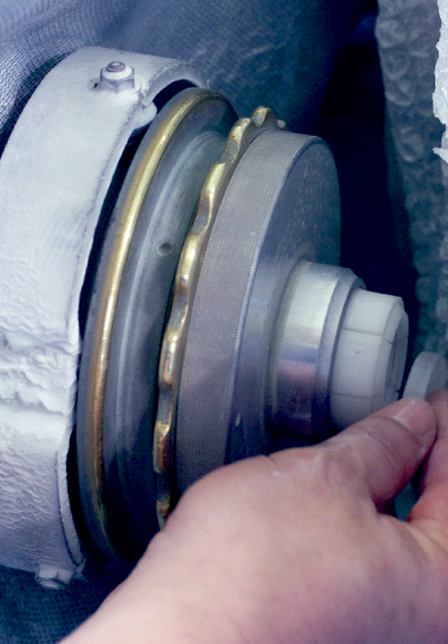

PROFILE
CG担当者 Kさん
- Q.普段はどのような仕事をしていますか？
-
CG加工を担当しています。
光学レンズの材料をダイヤモンドホイールを押し当ててレンズを削り形にします。
- Q.会社の特徴について。
-
レンズ加工に対して手作業で繊細で丁寧な仕事をしている会社だと思います。
- Q.仕事の面白さや難しさを感じるのは、どんなときですか？
-
試作品の加工では、型で形を整えた材料ではなく、円柱を輪切りにしたスライス材から形を作るところに面白さがあります。
一方、半球に近いレンズは普段の方法ではうまく加工できず、さまざまな工夫が必要な点が難しいところでした。
- Q.一緒に働く人や、職場の雰囲気について教えてください。
-
周りの方が自分よりも先輩なので、いろいろな事を教えてもらいアットホームな環境だと思います。
- Q.働き方や環境について。
-
自分はスポーツをやっているので、休みがとりやすい環境は凄くありがたいと思います。
- Q.応募を考えている方へ、メッセージをお願いします。
-
先輩に聞きながら進めることができるので、楽しく頑張れる場所だと思います。
一緒に頑張りましょう！